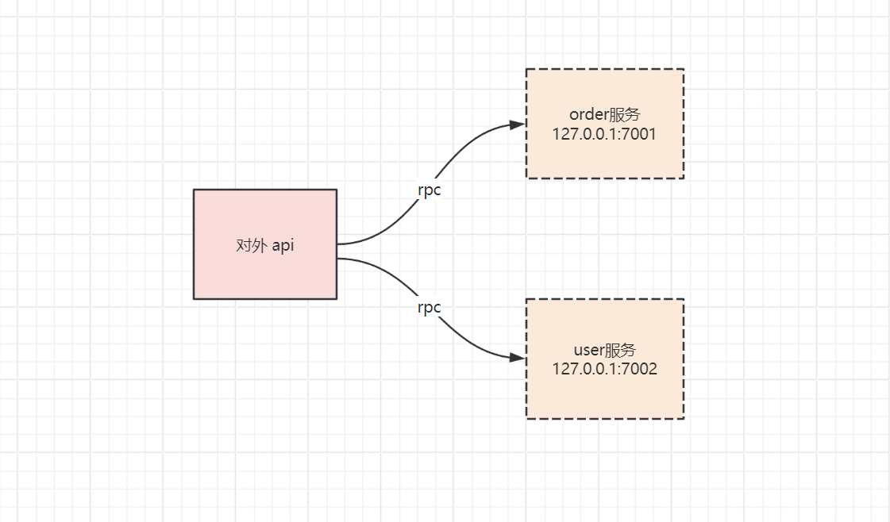
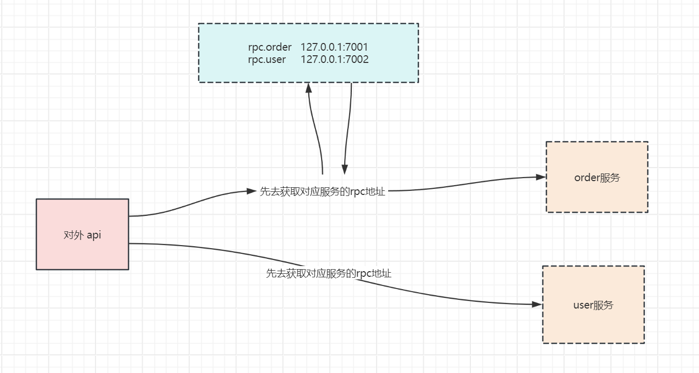

etcd：服务发现与配置管理
Etcd是一个高可用的分布式键值存储系统，主要用于共享配置信息和服务发现。它采用Raft一致性算法来保证数据的强一致性，并且支持对数据进行监视和更新
为什么要用etcd
主要是用于微服务的配置中心，服务发现0

在对外api这个应用里面，怎么知道order服务的rpc地址呢？
写在配置文件里面？
如果服务的ip地址变化了怎么办？在传统的配置文件模式，修改配置文件，应用程序是需要重启才能解决的
所以etcd就是来做这个事情的

至于为什么不用redis，大家只需要记住，etcd的数据可靠性更强
安装
windows安装
https://github.com/etcd-io/etcd/releases
linux安装
源码安装
https://blog.csdn.net/Mr_XiMu/article/details/127923827
yum安装
版本一般比较老
docker安装
docker-compose up -d 直接在文件夹中实现运行即可 ;
Go复制代码
version: '3.8'
services:
etcd:
image: quay.io/coreos/etcd:v3.5.9
container_name: etcd
restart: unless-stopped
ports:
- "2379:2379"
- "2380:2380"
environment:
# 节点名称
- ETCD_NAME=etcd-server
# 数据目录
- ETCD_DATA_DIR=/etcd-data
# 客户端监听地址
- ETCD_LISTEN_CLIENT_URLS=http://0.0.0.0:2379
- ETCD_ADVERTISE_CLIENT_URLS=http://0.0.0.0:2379
# 集群通信地址
- ETCD_LISTEN_PEER_URLS=http://0.0.0.0:2380
- ETCD_INITIAL_ADVERTISE_PEER_URLS=http://etcd-server:2380
- ETCD_INITIAL_CLUSTER=etcd-server=http://etcd-server:2380
- ETCD_INITIAL_CLUSTER_STATE=new
- ETCD_INITIAL_CLUSTER_TOKEN=etcd-cluster-1
# 开启认证，设置 root 密码（类似 Redis 的 --requirepass）
- ETCD_ROOT_PASSWORD=20031213dmy
volumes:
# 数据持久化挂载：本地 data 目录映射容器数据目录
- ./data:/etcd-data
volumes:
etcd-data:
后续的全部命令安排 :
C:\Users\17hwliao>docker exec etcd 基于docker 中的etcd容器直接操作即可 :
基本命令
Go复制代码
// 设置或更新值
etcdctl put name 张三
C:\Users\17hwliao>docker exec etcd etcdctl put rpc.order 127.0.0.1:7001
// 获取值
etcdctl get name
C:\Users\17hwliao>docker exec etcd etcdctl get rpc.order
rpc.order
127.0.0.1:7001
// 只要value
C:\Users\17hwliao>docker exec etcd etcdctl get rpc.order --print-value-only
127.0.0.1:7001
etcdctl get name --print-value-only
// 获取name前缀的键值对
C:\Users\17hwliao>docker exec etcd etcdctl get --prefix rpc.order
rpc.order
127.0.0.1:7001
etcdctl get --prefix name
// 删除键值对
C:\Users\17hwliao>docker exec etcd etcdctl del rpc.order
1
etcdctl del name
// 监听键的变化
etcdctl watch name
参考文档
etcd windows安装 https://www.cnblogs.com/wujuntian/p/12837926.html
etcdctl指令 https://www.jianshu.com/p/67cbef492812